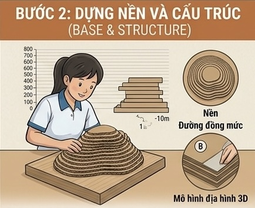
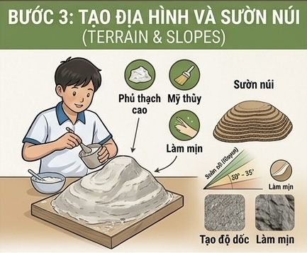
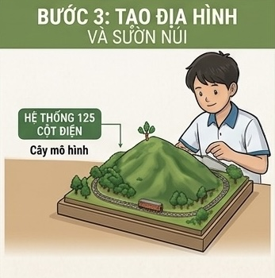
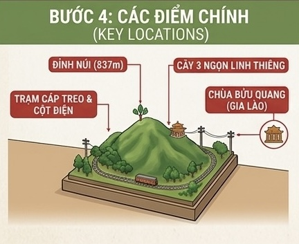

TRẠM 02 · MÔ HÌNH THỰC ĐỊA
Hướng dẫn dựng mô hình Núi Chứa Chan (837m)
Quy trình tái hiện địa hình Núi Chứa Chan chính xác theo tỷ lệ bằng các nguyên liệu thân thiện với môi trường.
Quy trình tái hiện địa hình Núi Chứa Chan chính xác theo tỷ lệ bằng các nguyên liệu thân thiện với môi trường.
Bước 1 - Dữ liệu & Tỷ lệ: Sử dụng dữ liệu GPX thực tế với độ cao núi 837m, tọa độ 10°56'N 107°22'E. Quy đổi mô hình theo tỷ lệ chuẩn 1:10,000 (1cm tương đương 1km).
Nguyên liệu chuẩn bị: Bìa carton, giấy báo, keo sữa, thạch cao, sơn màu và các mô hình cây trang trí.
Bước 2 - Tạo lớp đồng mức: Cắt bìa carton theo các đường đồng mức (khoảng cách 50m - 100m - 200m), sau đó dán chồng từng lớp để tạo dáng hình học ban đầu cho núi.

Nhồi giấy báo vào các khoảng trống, đắp hỗn hợp thạch cao lên bề mặt bìa carton để tạo bề mặt mịn và tái hiện độ dốc tự nhiên từ 20° đến 35°.


Đắp kín lớp khung carton để xóa khoảng hẫng giữa các đường đồng mức.
Dùng cọ mỳ/mịn miết nhẹ bề mặt tạo độ mượt tự nhiên cho sườn núi.
Uốn nắn chính xác độ nghiêng thực tế của các vách sườn Núi Chứa Chan.
Tạo hiệu ứng bề mặt đá tảng tự nhiên đặc trưng của địa hình núi.
Đánh dấu chính xác các địa danh trọng điểm trên mô hình và tiến hành phủ thảm thực vật đặc trưng của hệ sinh thái rừng mưa.
Cột mốc độ cao nhất của toàn bộ mô hình.
Mô phỏng cây di sản tâm linh nổi tiếng.
Tái hiện ngôi chùa nổi tiếng gắn liền với núi.
Điểm nhấn hạ tầng giao thông và năng lượng.

Quét mã QR hoặc truy cập đường link bên dưới để xoay, thu phóng và khám phá chi tiết địa hình 3D trên thiết bị của bạn.
Bản sao địa hình số hóa cho phép bạn nhìn ngắm Núi Chứa Chan từ mọi góc độ, dễ dàng quan sát các thung lũng, độ dốc và thảm thực vật rừng mưa.